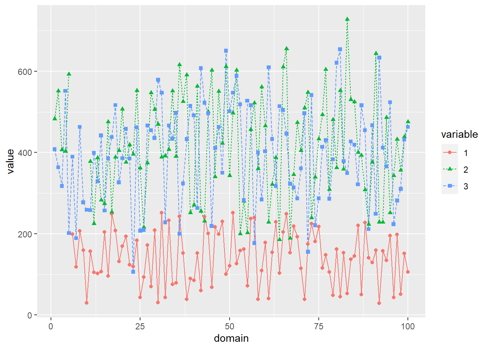
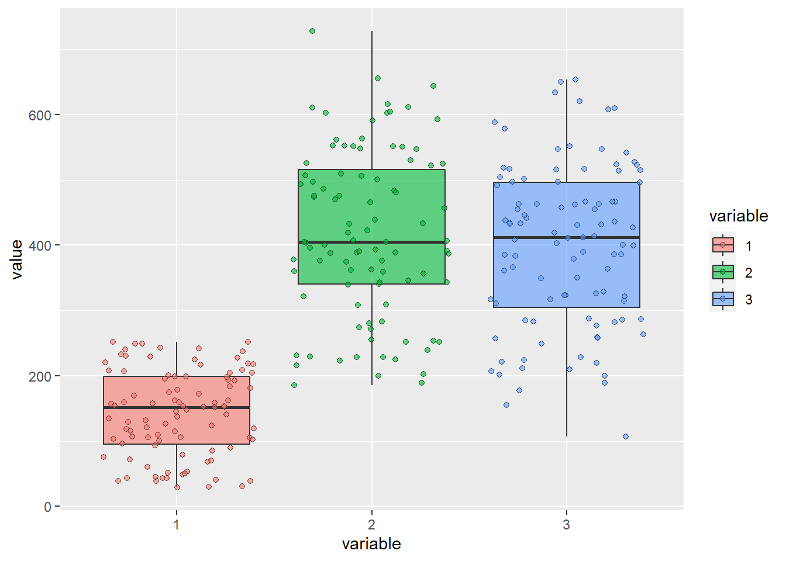

library(Matrix)
library(mvtnorm)
library(reshape2)
library(ggplot2)
library(sae)Lade nötiges Paket: MASSLade nötiges Paket: lme4The theoretical basis of the Multivariate Fay-Herriot model with missing dependent variables (MMFH) and the presented code is given in Chapter 6 of the dissertation Model-Based Prediction and Estimation Using Incomplete Survey Data by Anna-Lena Wölwer, which is available here.
This folder contains files MMFH_gen_dat_m3.R and MMFH_fitting.R, both of which contain executable functions which are illustrated in the following.
MMFH_gen_dat_m3.R contains functions for generating data according to an MMFH modelMMFH_fitting.R contains a function for fitting a MMFH model (parameter estimation, predictions, MSE estimates)For the examples, we use the following libraries.
library(Matrix)
library(mvtnorm)
library(reshape2)
library(ggplot2)
library(sae)Lade nötiges Paket: MASSLade nötiges Paket: lme4source(paste0(getwd(), "/MMFH_gen_dat_m3.R"))The file comes with two functions f_prep_MMFH_m3& f_gen_MMFH_m3 for generating data according to a MMFH model with \(m=3\) dependent variables (therefore the _m3 in the name). The code contains comments on the inputs of the functions.
Function f_prep_MMFH_m3 is used to generate all quantities which are typically considered to be fixed in model-based small area simulation studies, e.g. the matrix of auxiliary information. For a model-based simulation study, we would execute this function only once. The function takes as input all parameters of a multivariate Fay-Herriot model like the fixed effects, the variance components, and the number of domains.
Function f_gen_MMFH_m3 is used to generate all quantities which are typically considered random in model-based small area simulation studies like the random effects and sampling errors. For a simulation study, we would execute this function in each Monte Carlo iteration. The function takes as input all inputs and outputs of function f_prep_MMFH_m3.
source(paste0(getwd(), "/MMFH_fitting.R"))The file contains function f_MMFH. The code contains comments on the inputs of the function.
Function f_MMFH is used to fit a MMFH model to input data. This includes the estimation of the model fixed effects (\(\beta\)) and variance components (\(\theta\)) via Fisher-Scoring, either based on maximum likelihood (ML) or restricted maximum likelihood (REML). Furthermore, based on the parameter estimates, the model returns estimates of the random effects, the synthetic predictions (\(X \beta\)) and the Empirical Best Predictions (EBPs). In addition, the MSE estimates are given.
Although in this example we only cover the case of \(m=3\) dependent variables, function f_MMFH works for an arbitrary number of \(m\geq 2\) dependent variables.
Generate the fixed quantities of a MMFH model including randomly generated auxiliary information (documentation of required inputs is given in MMFH_gen_dat_m3.R).
Set input quantities
m = 3 # total number of variables of interest, number of dependent variables
D = 100 # total number of domains
v_ref = c(2,3,4) # variances of random effects of the 3 variables
cor_ref = c(.2,.3,.4) # correlations of random effects
v_rer = c(2.5,3.5,4.5) # variances of sampling errors of the 3 variables
cor_rer = c(.15,.25,.35) # correlations of sampling errors
beta = list(c(1.5, 2.5), # list, for each variable: vector of fixed effects
c(2.3,3.3,4.3),
c(4.1,3.1,2.1, 2.2))
range_aux = c(10, 100) # range of the uniform distribution from which auxiliary information is sampled from
perc_mis = c(5, 5, 2) # percentage of missing domain information per variableGenerate data
d_fix <- f_prep_MMFH_m3(seed = 56)
names(d_fix) [1] "m" "D" "v_ref" "cor_ref" "v_rer" "cor_rer"
[7] "beta" "range_aux" "seed" "m" "V_ed" "V_ud"
[13] "x" Use f_gen_MMFH_m3 to generate the model information which typically varies between Monte Carlo iterations. That is, the generation of the dependent variables. The function allows to set certain values as missing, input perc_mis determines the number of domains for which the survey information of the three dependent variables is missing. Note that in this code the missing dependent variables are non-overlapping. That is, there is maximum one missing dependent variable per domain. This, however, can easily be changed in the code.
d_var <- f_gen_MMFH_m3( x = d_fix$x,
beta = d_fix$beta,
V_ud = d_fix$V_ud,
V_ed = d_fix$V_ed,
seed = 67,
verbose = TRUE )
Generated number of missing y values (non-overlapping over the 100 domains) for the three dependent variables is 5 5 0 str(d_var)List of 3
$ y_true: num [1:100, 1:3] 239.5 47.7 75.6 145.7 39 ...
$ y_obs : num [1:100, 1:3] 239.6 46.8 74.9 147.4 41.2 ...
$ y_mis : num [1:100, 1:3] NA NA NA NA NA ...y_true are the (according to the model) true values of the dependent variables, y_obs are the survey estimates of the dependent variables, y_mis are the survey estimates, which we consider to be available, some of which are missing (determined by perc_mis in f_gen_MMFH_m3). The missing mechanism is missing completely at random (MCAR).
Have a look at the generated dependent variables.
d_plot <- reshape2::melt(d_var$y_mis)
d_plot$Var2 <- factor(d_plot$Var2)
colnames(d_plot) <- c("domain", "variable", "value")ggplot2::ggplot(d_plot,
aes(x = domain, y = value, group = variable,
color = variable, fill = variable,
shape = variable, lty = variable)) +
geom_line() +
geom_point()Warning: Removed 5 row(s) containing missing values (geom_path).Warning: Removed 10 rows containing missing values (geom_point).
ggplot2::ggplot(d_plot,
aes(x = variable, y = value,
fill = variable)) +
geom_boxplot(alpha = .6) +
geom_jitter(pch = 21, alpha = .6)Warning: Removed 10 rows containing non-finite values (stat_boxplot).Warning: Removed 10 rows containing missing values (geom_point).
From the error message, you can see that there are (as we wanted) missing values in the dependent variables. Furthermore, you can play around with the parameters of the data generation and see how the outcomes of the sampling estimates change.
The number of domains with missing values of variables 1, 2, and 3 is
colSums(is.na(d_var$y_mis))[1] 5 5 0Set some of the function inputs.
method <- "REML" # REML or ML in Fisher-Scoring
# method <- "ML"
verbose <- TRUE # print intermediate outputs
eps <- 1e-8 # convergence tolerance
maxiter <- 100 # maximum number of iterations of Fisher-SocringFit a MMFH model to survey estimates d_var$y_mis (documentation of required input in MMFH_fitting.R).
res_MMFH <- f_MMFH(y = d_var$y_mis,
x = d_fix$x,
V_ed = d_fix$V_ed,
theta = NULL,
theta_start = NULL,
method = method,
eps = eps,
maxiter = maxiter,
verbose = TRUE) iter loglike lambda var_1 var_2 var_3 rho_12 rho_13 rho_23 v1.x1 v1.x2 v2.x1 v2.x2 v2.x3 v3.x1 v3.x2 v3.x3 v3.x4
0 -424.875 NA 1.949 1.847 4.233 0.034 -0.057 -0.121 1.045 2.506 1.973 3.304 4.299 3.729 3.104 2.119 2.185
1 -421.162 1 1.953 1.843 4.228 0.036 0.348 0.366 0.952 2.508 2.157 3.302 4.298 3.675 3.102 2.120 2.186
2 -421.155 1 1.968 1.820 4.205 0.047 0.353 0.344 0.957 2.508 2.145 3.302 4.298 3.681 3.102 2.120 2.186
3 -421.154 1 1.968 1.822 4.205 0.047 0.353 0.345 0.956 2.508 2.145 3.302 4.298 3.680 3.102 2.120 2.186
4 -421.154 1 1.968 1.822 4.205 0.047 0.353 0.344 0.956 2.508 2.145 3.302 4.298 3.680 3.102 2.120 2.186
5 -421.154 1 1.968 1.822 4.205 0.047 0.353 0.345 0.956 2.508 2.145 3.302 4.298 3.680 3.102 2.120 2.186
6 -421.154 1 1.968 1.822 4.205 0.047 0.353 0.345 0.956 2.508 2.145 3.302 4.298 3.680 3.102 2.120 2.186
7 -421.154 1 1.968 1.822 4.205 0.047 0.353 0.345 0.956 2.508 2.145 3.302 4.298 3.680 3.102 2.120 2.186
8 -421.154 1 1.968 1.822 4.205 0.047 0.353 0.345 0.956 2.508 2.145 3.302 4.298 3.680 3.102 2.120 2.186 With verbose = TRUE, the model returns the intermediate parameter estimates.
See the model output.
str(res_MMFH)List of 2
$ est:List of 4
..$ ebp : num [1:100, 1:3] 238.3 47.8 76 148.2 37.9 ...
.. ..- attr(*, "dimnames")=List of 2
.. .. ..$ : chr [1:100] "1" "2" "3" "4" ...
.. .. ..$ : chr [1:3] "v1" "v2" "v3"
..$ ref : num [1:100, 1:3] 0.00854 -0.0459 0.67183 0.39905 0.65461 ...
.. ..- attr(*, "dimnames")=List of 2
.. .. ..$ : chr [1:100] "1" "2" "3" "4" ...
.. .. ..$ : chr [1:3] "v1" "v2" "v3"
..$ Xbeta: num [1:100, 1:3] 238.3 47.8 75.4 147.8 37.2 ...
.. ..- attr(*, "dimnames")=List of 2
.. .. ..$ : chr [1:100] "1" "2" "3" "4" ...
.. .. ..$ : chr [1:3] "v1" "v2" "v3"
..$ fit :List of 6
.. ..$ method : chr "REML"
.. ..$ covergence: logi TRUE
.. ..$ iterations: num 8
.. ..$ estcoef :'data.frame': 9 obs. of 4 variables:
.. .. ..$ beta : num [1:9] 0.956 2.508 2.145 3.302 4.298 ...
.. .. ..$ std_error: num [1:9] 0.49772 0.00793 0.76687 0.00854 0.00921 ...
.. .. ..$ tvalue : num [1:9] 1.92 316.25 2.8 386.66 466.73 ...
.. .. ..$ pvalue : num [1:9] 0.05464 0 0.00515 0 0 ...
.. ..$ refvar : Named num [1:6] 1.9683 1.8216 4.2052 0.0474 0.3532 ...
.. .. ..- attr(*, "names")= chr [1:6] "var_1" "var_2" "var_3" "rho_12" ...
.. ..$ goodness : Named num -421
.. .. ..- attr(*, "names")= chr "ll"
$ mse: num [1:100, 1:6] 1.98 2.02 2.35 2.01 2.44 ...
..- attr(*, "dimnames")=List of 2
.. ..$ : chr [1:100] "1" "2" "3" "4" ...
.. ..$ : chr [1:6] "v1" "cov12" "cov13" "v2" ...The function returns the parameters estimates, EBPs, predictions of random effects, synthetic predictions, and MSE estimates.
We make an example to compare the MMFH output to the output of a (univariate) Fay-Herriot model using function sae::mseFH.
# Calculate (univariate) Fay-Herriot models with function mseFH from the sae package
res_FH <- list()
for (k in 1:m) {
a_tmp <- which(!is.na(d_var$y_mis[,k]))
res_FH[[k]] <- sae::mseFH(d_var$y_mis[,k][a_tmp] ~ -1 + d_fix$x[[k]][a_tmp,],
vardir = sapply(d_fix$V_ed[a_tmp], function (d){ d[k,k] }),
method = method,
PRECISION = eps,
MAXITER = maxiter)
}For illustration, we choose variable 1.
# For variable 1: Get FH results
k = 1
a_tmp <- which(!is.na(d_var$y_mis[,k]))
eblup_tmp <- rep(NA, D)
mse_tmp <- rep(NA, D)
eblup_tmp[which(!is.na(d_var$y_mis[,k]))] <- as.vector(res_FH[[k]]$est$eblup)
mse_tmp[which(!is.na(d_var$y_mis[,k]))] <- as.vector(res_FH[[k]]$mse) Compare the EBPs:
dat_comb <- cbind("true" = d_var$y_true[,k],
"FH_EBLUP" = eblup_tmp,
"FH_SYN" = as.vector(d_fix$x[[k]] %*% res_FH[[k]]$est$fit$estcoef[,1]),
"MMFH" = res_MMFH$est$ebp[,k])
dat_comb[1:10,] true FH_EBLUP FH_SYN MMFH
1 239.51515 NA 238.17186 238.26745
2 47.71354 NA 47.84775 47.78127
3 75.63528 NA 75.38035 76.04717
4 145.73228 NA 147.80107 148.23606
5 39.00546 NA 37.22635 37.85438
6 198.10961 199.02452 199.16020 199.00652
7 118.40408 119.10695 119.41298 119.06728
8 205.77405 205.31799 203.59841 205.40902
9 160.21746 159.85661 160.00742 159.88292
10 29.23415 28.29102 26.92432 28.23456Exemplary for the first 10 domains, you can see the true values of the dependent variables in the first column. Furthermore, column 2 shows the FH EBLUPs (FH_EBLUP). For domains 1 to 5, the survey estimates were considered missing. Therefore, the FH model cannot be used to calculated EBLUPs and only return synthetic predictions FH_SYN. In addition, column 4 gives the EBPs of the MMFH model. With the MMFH model, we can calculate EBPs also for the domains with missing values of variable 1 as the model uses the correlations of the variable to variables 2 and 3 in a multivariate model.
Compare the MSE estimates:
cbind("FH" = mse_tmp,
"MMFH" = res_MMFH$mse[,"v1"])[1:10,] FH MMFH
1 NA 1.981236
2 NA 2.016304
3 NA 2.354339
4 NA 2.009114
5 NA 2.437138
6 1.180138 1.140648
7 1.170989 1.133925
8 1.181937 1.331333
9 1.170161 1.114146
10 1.215357 1.305492Also for the MSE, only the MMFH model can give estimates for domains 1 to 5, for which the survey direct estimates are considered missing.